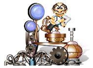

 Игры от Алавар / Alawar
Язык интерфейса: русский
Размер игры: 11.13 Мб
Собери сокровища подземных лабиринтов при помощи машины доцента Самоцветова.
Описание:
Охота за сокровищами — излюбленная тема множества аркад. Возможно, вы уже успели побыть кротом, порыть землю и пособирать монетки в запутанных лабиринтах. Но теперь задача усложнилась и упростилась одновременно. Главная цель игры — собрать на уровне все золото, но не самому, а при помощи манипулятора. Он все сделает сам, главное указать направление движения. Сложность в том, что попутно нужно одолеть монстров, которые в самый неподходящий момент нападают из засады . Основное отличие игры от других логических аркад — смешение жанров. Придется пошевелить не только пальцами, но и извилинами, чтобы суметь проложить оптимальный и безопасный маршрут к сундуку с сокровищами. Используйте полезные бонусы и слабые места своих подземных оппонентов. Мы надеемся, что благодаря своей яркой графике и головоломкам игра понравится и детям, и их родителям. Собирайтесь на охоту! Лабиринты зовут!
Скриншоты: